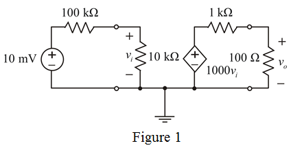

Determine the overall gain for voltage amplifier.
Substitute for  ,
,  for ,
for ,  for ,
for ,  for and
for and  for
for  in the equation.
in the equation.
Therefore, the overall gain for voltage amplifier is .
Draw the circuit diagram of voltage gain amplifier.

Determine the overall gain for voltage amplifier.
Substitute for , for , for , for and for in the equation.
Therefore, the overall gain for voltage amplifier is .
Voltage across the input resistance is calculated as
Calculate the percentage of voltage drop across the input resistance.
Determine the value of voltage drop in the internal resistance.
Therefore, remaining of source voltage is lost in the internal resistance.
Determine the voltage across the output resistance.
Calculate the percentage of voltage drop across the output resistance.
Therefore, remaining of source voltage is lost in the output resistance of the amplifier circuit.
Consider the source connected directly to load.
Therefore, the gain is .
Determine the ratio of voltage gains.

Therefore, the ratio of voltage gains is .
Therefore, it can be conclude that, the voltage gain due to amplifier is more beneficent than directly connected to the load.